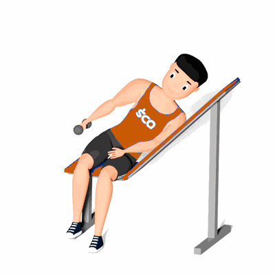

Elevação Lateral no Banco Inclinado

Esse exercício trabalha a musculatura dos deltoides de forma multifuncional, eficiente e isolada.
Ficha Técnica
Tipo: Musculação
Grupo Muscular: Ombro
Aparelho: Nenhum
Músculos: Nenhum
Como realizar
- Deite-se em decúbito lateral, obviamente em um banco inclinado que poderá ser o do supino inclinado ou um banco com regulagem;
- Em seguida, deverá segurar o halteres com uma das mãos e posicionar esse membro superior ao longo do corpo;
- Deixe os cotovelos relaxados;
- Eleve os braços lateralmente, sem flexioná-los, até que as mãos atinjam a altura dos ombros;
- Retorne à posição inicial e repita os movimentos.
 RC STORE
RC STORE